Designing a personalised meditation companion that transforms mindfulness into a daily ritual — from research and product strategy through to UX architecture, interaction design, and the final product experience.
Role
Co-founder · Senior Lead Product Designer · Product Director
Scope
Product Strategy, UX Research, Interaction Design, UI Design, Design System, Brand
Platform
iOS · Android · Mobile
Type
0→1 Product Build
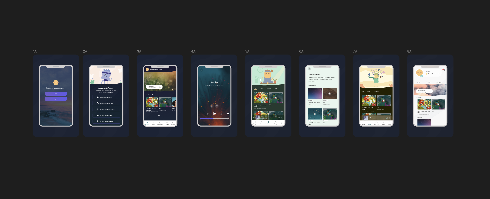
01 — The Opportunity
Meditation apps have successfully introduced millions of people to mindfulness. However, many users still struggle with consistency. The challenge was not access to meditation content — it was helping people answer: "What do I need right now?" and creating an experience that encourages them to return.
Aruma was created to move beyond a meditation content library and become a personal mindfulness companion — an experience that understands the person behind the practice.
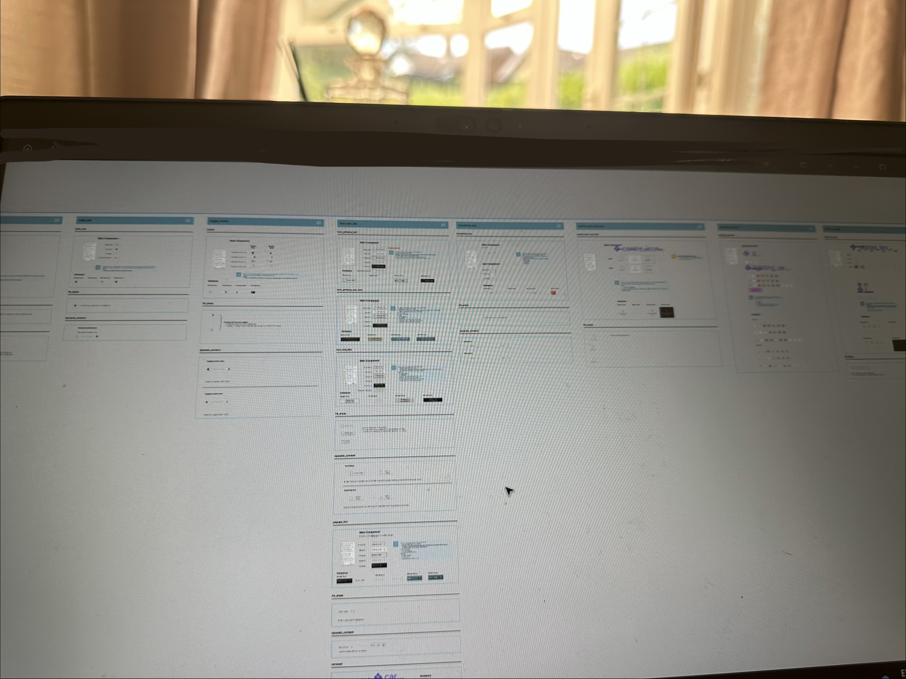
02 — The Challenge
The meditation category was already crowded with established platforms. Many existing solutions focused on large content libraries, broad meditation categories, and subscription models. However, users often experienced something different from what was promised.
Too many options made it difficult to choose the right meditation. Users wanted guidance, not a catalogue.
The experience often felt generic rather than designed around individual needs, emotional state, or intentions.
Users struggled to maintain meditation as a consistent habit. The product didn't create a reason to return.
Create a product experience that understands users emotionally and guides them towards the right mindfulness practice at the right moment.
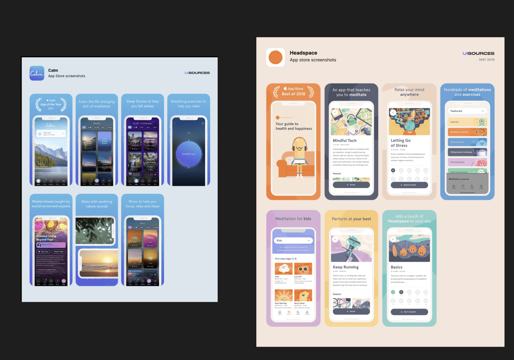
03 — My Role
As Co-founder and Product Design Lead, I was responsible for shaping both the strategic direction and the complete user experience. My role went beyond interface design — it required connecting strategy, research, and design execution to build something people genuinely wanted to use.
Defined the product vision, experience principles, and opportunities for differentiation within the meditation market. Shaped how Aruma would compete, who it would serve, and what would make it worth returning to.
Conducted research to understand user motivations, behaviours, challenges, and expectations — moving from assumptions to evidence before committing to any design direction.
Created user journeys, personas, information architecture, wireframes, prototypes, and interaction models — ensuring every design decision was grounded in real user needs.
Designed the complete digital experience including UI, design system, and visual language — creating a calm, consistent, and emotionally resonant product from end to end.
04 — Research & Discovery
Before designing solutions, I focused on understanding why people start meditation, why they stop, what moments trigger the need for mindfulness, how users choose meditation experiences, and what creates long-term engagement. Research was not a phase — it was a foundation.
Conversations with existing and lapsed meditation practitioners to understand real motivations and friction points.
In-depth analysis of how existing products structure onboarding, discovery, and habit formation.
Mapping the emotional arc from first interest through to sustained practice — identifying where existing products lose users.
Early concept validation with target users before any engineering investment — iterating on the experience, not just the interface.
05 — Market & Competitive Research
Before defining Aruma's product strategy, I conducted market and competitive research to understand the evolving meditation and wellness landscape. The research focused on competitor positioning, product experiences, user expectations, and market opportunities — including regional differences between the UK and Dubai/UAE wellness markets.
I analysed established meditation platforms — Calm, Headspace, Insight Timer, and emerging wellness products — across three dimensions: product experience, brand and positioning, and business strategy.
Onboarding journeys, meditation discovery, personalisation approaches, habit-building mechanics, and retention strategies.
Messaging, emotional connection, user motivations, trust-building approaches, and premium wellness positioning.
Subscription models, content strategy, partnerships, and market differentiation strategies.
The market was moving from content libraries towards personalised experiences — users need confidence in choosing the right experience, not more choices.
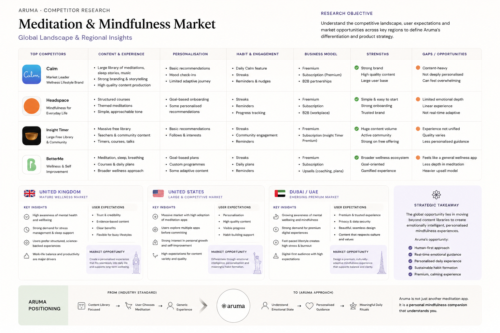
A mature wellness market with growing interest in mental wellbeing, stress management, sleep improvement, and workplace wellness. Users sought experiences that fit naturally into morning routines, work breaks, and evening wind-down moments — design opportunity: fit naturally into everyday moments.
An emerging opportunity with increasing awareness of mental wellbeing, strong adoption of digital services, and a diverse international user base. Users in fast-paced professional environments sought practical tools for stress management, balance, and emotional wellbeing — design opportunity: a premium mindfulness experience combining technology, personalisation, and emotional wellbeing.
The world's largest digital wellness market, with strong adoption of mindfulness solutions driven by workplace burnout, anxiety, and self-improvement culture. Users sought experiences that integrate naturally into daily routines — morning mindfulness, midday reset, stress relief, and evening wind-down. Design opportunity: personalised guidance that adapts to emotional state and daily moments, supporting long-term habit formation through a consistent, calming experience.
Research across the UK, US, and UAE (Dubai) revealed consistent behavioural patterns despite cultural and regional differences. While motivations varied — from workplace stress and burnout to improving sleep, focus, or overall wellbeing — users across all three markets shared common expectations:
These insights became the foundation of Aruma's product strategy. Instead of competing by offering more content or more features, Aruma focused on creating a more meaningful and personalised experience:
Understanding users' goals and current emotional state from the very first session — creating a personalised starting point rather than a generic setup flow.
Personalised meditation suggestions based on emotional context rather than categories — guiding users towards what they need, not what exists in a library.
Every interface decision reduced cognitive load — keeping users in the experience rather than navigating it.
Features designed to encourage consistency — rewarding progress without creating obligation or anxiety around missing a session.
A visual and interaction language that builds trust and emotional connection — making the product feel like part of the mindfulness practice itself.
"By grounding product decisions in user research and market analysis, Aruma differentiated itself through personalisation, emotional intelligence, and simplicity — rather than competing on the size of its content library."— Strategic foundation behind the Aruma product experience
06 — Key Insight
Many meditation apps provide hundreds of sessions. However, more choices can create more friction. Users were not asking "What meditation categories exist?" — they were asking "Which meditation is right for me today?" The insight was not about content volume. It was about personalised emotional guidance.
"Move from content discovery to personal emotional guidance."— Core design shift that shaped the Aruma experience
07 — Product Vision
Aruma was designed around a simple belief: technology should understand people, not overwhelm them. The product vision shaped every experience principle and every design decision that followed.
The experience adapts to the user's needs, emotional state, and intentions. Every session recommendation feels considered, not random.
Reduce cognitive load and remove unnecessary decisions. Getting to the right meditation should require no effort.
Every interaction should create a sense of peace. The product itself should feel like part of the mindfulness practice.
Encourage habits without creating pressure. Progress should feel rewarding, not obligatory.
08 — User Journey
The experience was designed around three key moments in the meditation journey — each with a distinct user mindset and a corresponding design question.
How can we understand their emotional state and guide them quickly to the right experience? This is where personalisation does the most work — removing friction before the practice even begins.
How can we remove distractions and create presence? The player experience was designed to disappear — putting the user's attention on the practice, not the interface.
How can we encourage reflection and continued engagement? Post-session moments were designed to reinforce the value of the practice and build a reason to return.
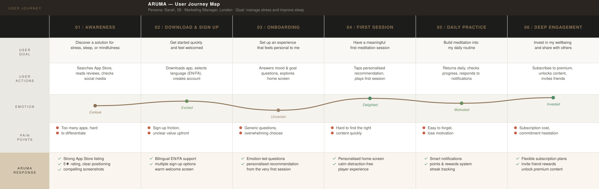
09 — Information Architecture
Traditional meditation apps often follow the same pattern: Library → Categories → Search → Selection. This creates unnecessary decision-making at the moment users are seeking calm. Aruma explored a different model: Emotional state → Personal recommendation → Meditation → Reflection. The goal was to make finding the right experience feel effortless — not like browsing a catalogue.
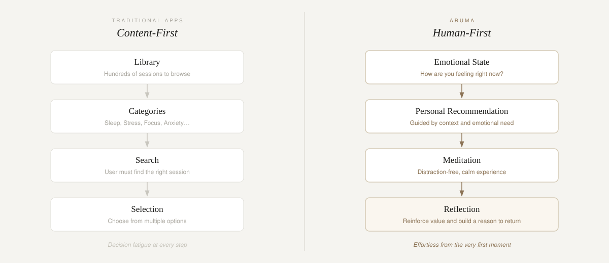
10 — Designing the Experience
The interface was designed around emotional warmth, simplicity, trust, focus, and calmness. Every interaction was considered to reduce cognitive load and support mindfulness. The visual language was built to feel like a continuation of the practice itself — not a product interrupting it.
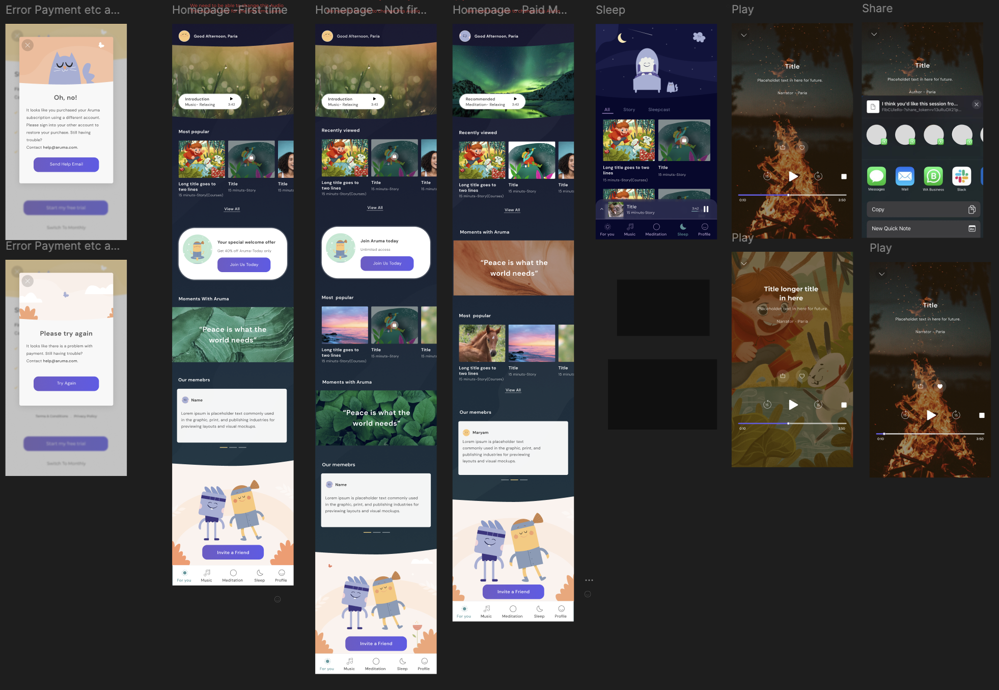
11 — Onboarding Experience
The onboarding experience was designed to understand the person behind the meditation. Instead of asking "What content do you want?" — Aruma focused on "What do you need right now?" Users were guided through personal goals, emotional state, meditation preferences, and available time — creating a more personalised starting point from the very first session.
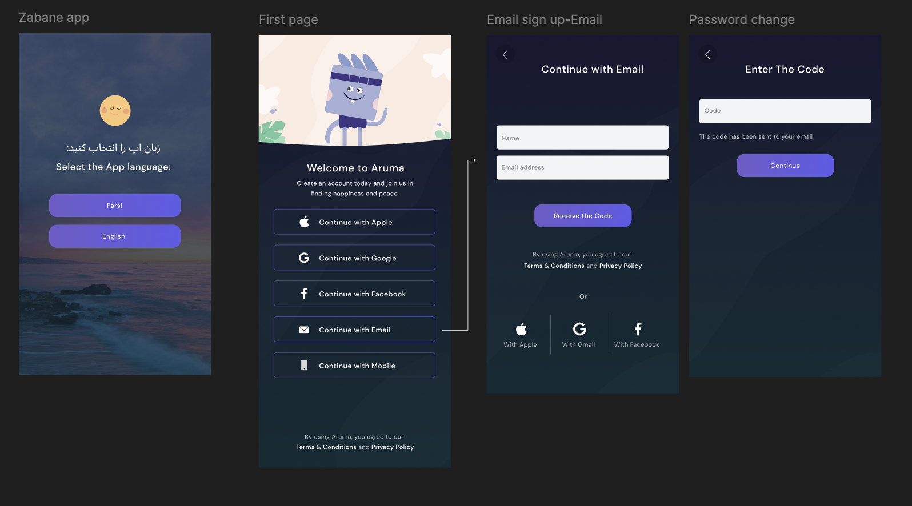
12 — Meditation Experience
The meditation experience focused on reducing distractions and allowing users to stay present. Design decisions included a minimal interface, clear hierarchy, calm transitions, focused interactions, and an emotional visual language that receded when the practice began — and supported it throughout.
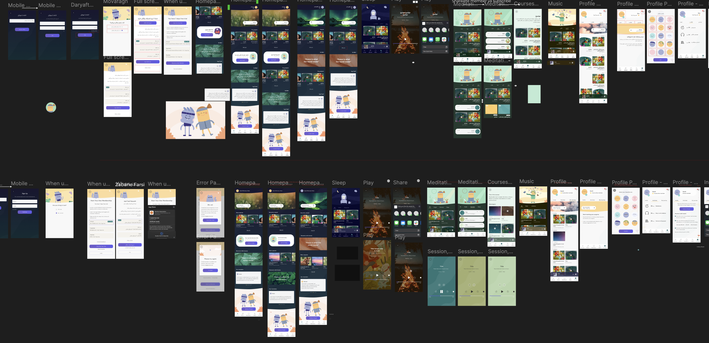
13 — Design System
To create consistency across the product, I developed a component library, typography system, colour framework, UI patterns, and interaction principles. The design system allowed the product to scale while maintaining a consistent emotional experience — ensuring that every new feature felt native to Aruma, not bolted on.
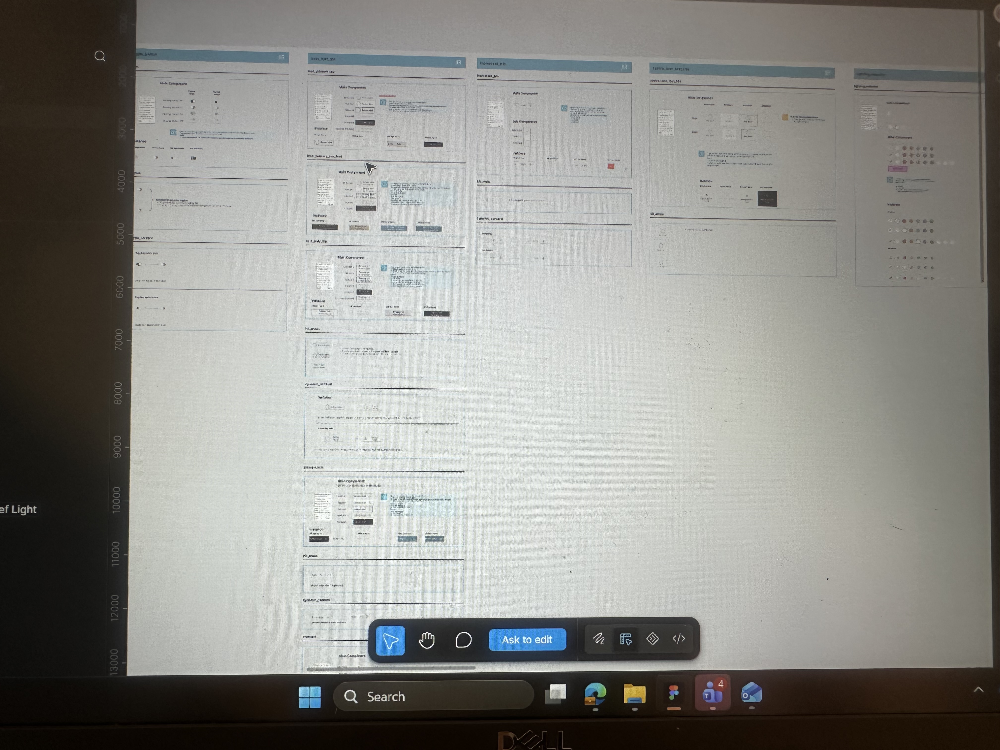
14 — Testing & Iteration
Throughout the design process, concepts were evaluated and refined through prototype testing, user feedback, experience reviews, and design iterations. Key focus areas were improving discoverability, reducing friction, increasing user confidence, and creating a more personalised experience — with each round of testing informing the next design decision.
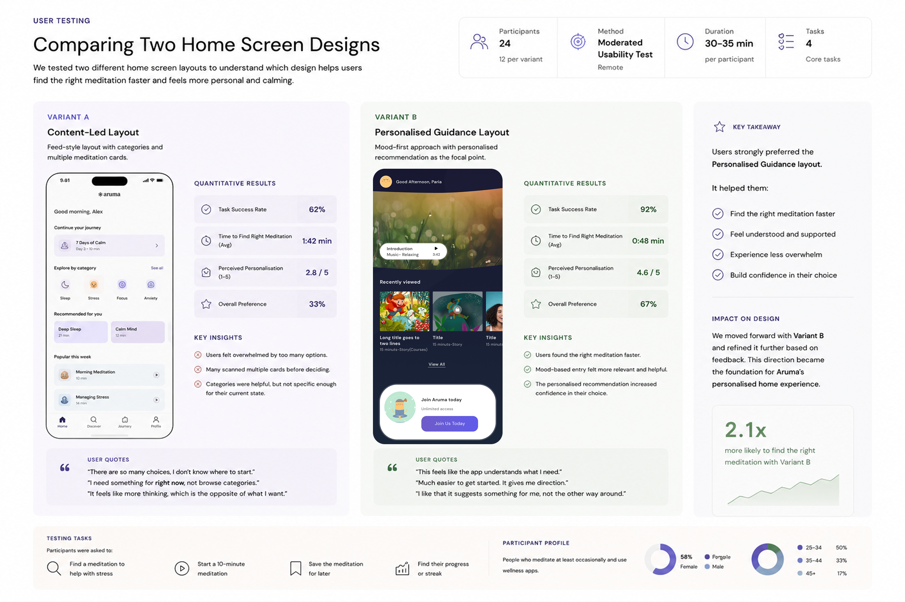
15 — Product Leadership
Building Aruma required balancing user needs — creating genuine value for people's wellbeing — business goals — creating a differentiated product experience — and technical considerations — building realistic and scalable solutions. My role was connecting these disciplines to create a cohesive product vision that the whole team could build towards.
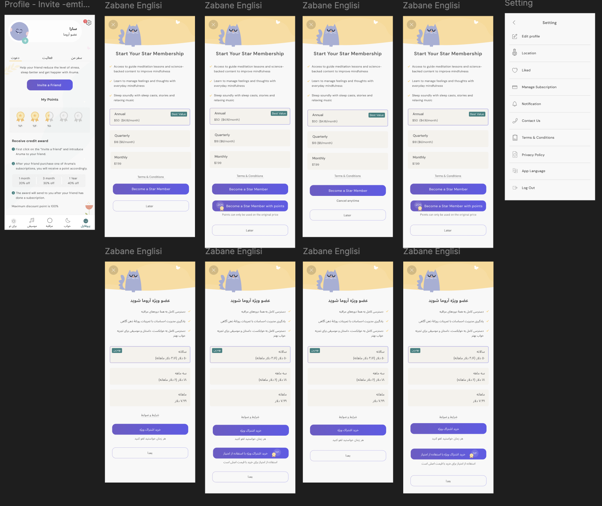
16 — Outcome
Aruma was created around one central idea: technology should not compete for our attention — it should help us reconnect with ourselves. The final experience transformed meditation from a simple activity into a more personal and meaningful daily ritual.
17 — Reflection
Creating Aruma strengthened my belief that successful products are built through a deep understanding of human behaviour. The biggest challenge was not designing more features — it was creating an experience that people genuinely wanted to return to.
As a Product Designer and Co-founder, I learned the importance of connecting strategy, user needs, and design execution to create products that make a meaningful impact. The discipline of founder-led design — where you live with every decision, hear every piece of feedback, and feel every failure — made me a sharper and more honest designer.
"Technology should not compete for our attention. It should help us reconnect with ourselves."— The founding principle behind Aruma
Next project
Marex — Digital Transformation →Aruma is one example of taking a product from zero to one — combining founder thinking with senior design leadership. If you're working on something ambitious, let's talk.
Start a conversation →